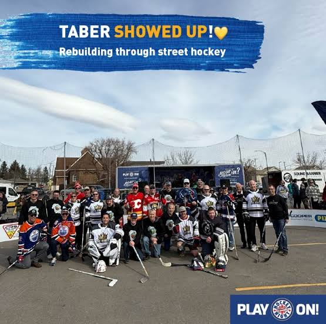
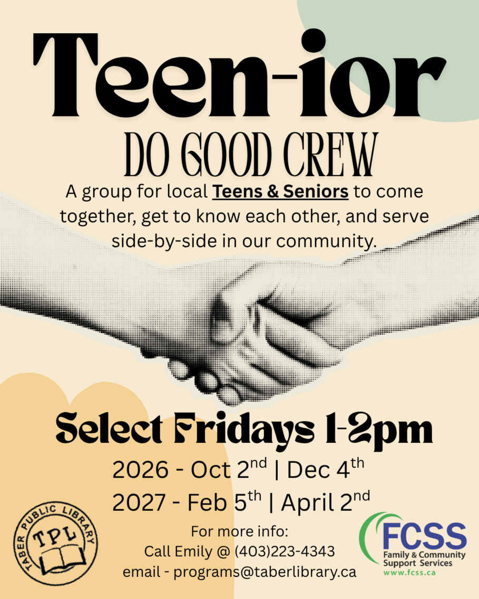
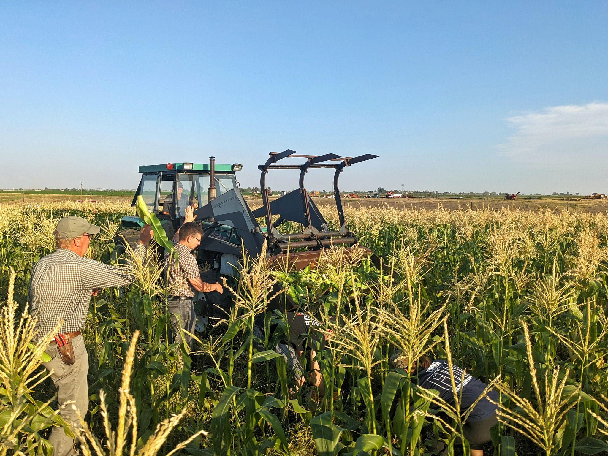

Community of Taber

Taber community has come to together of the young hacokey players of our town. A rink exploding doesnt stop our young hockey player so our great community hosted an event where all hockey players alike may enjoy vendors and organized street hockey games!

Local library of Taber in collaboration with Family and Communitie Support Services host and event for young adults, teens and seniors to socialize and have a good time all in the effort to make taber a more welcoming place for all and advertising support for eachother in the community.

Local garden near trout pond has been created! With the help of the communit and local churches and business Taber introduces a farm everyone may use. Come by within the harvest where you can make a selection of various plants in the garden that you may take home with you for no extra fee!